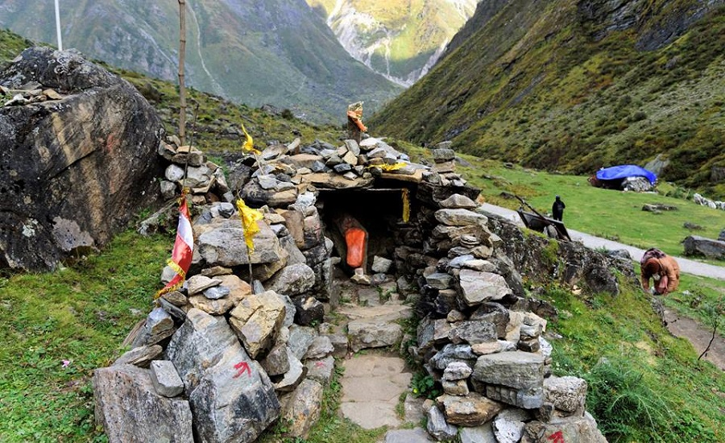
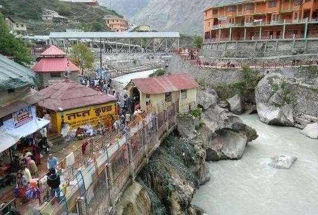
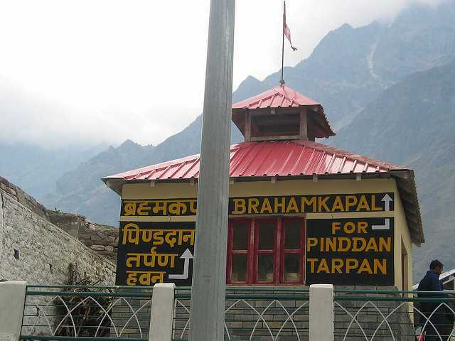
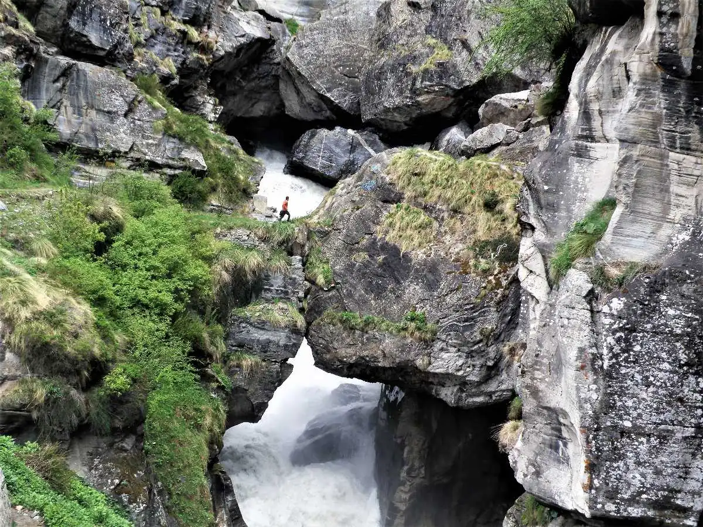

Sacred Temple
Badrinath Temple
0 km from City Center
Dedicated to Lord Vishnu, one of the four Char Dham pilgrimage yatras. Houses a black stone idol of
Lord Vishnu.

Lord Vishnu Footprint
Charan Paduka
1 km from City Center
A boulder bearing the footprints of Lord Vishnu, believed to have descended from Vaikuntha here.

Natural Hot Water Spring
Tapt Kund
0 km from City Center
Natural hot water spring believed to be home of Lord Agni. Devotees take a dip before visiting
temple.

Religious Site
Brahma Kapal
0 km from City Center
A religious site where Lord Brahma is believed to exist. Place for performing ancestral rituals.

Stone Bridge
Bheem Pul
3 km from City Center
Natural stone bridge on River Saraswati, believed to be placed by Bheem of Pandavas.